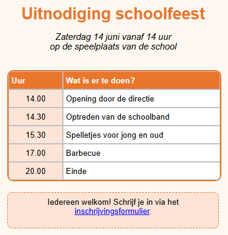

Leerpad › Les 7
Tekstblokken

Tabel of tekstblok?
- Een tabel gebruik je voor gegevens in rijen en kolommen.
- Een tekstblok is een vrij tekstvak dat je overal op de pagina kunt zetten: een titel, een korte uitleg, een opmerking of een voettekst.
Zo maak je het zelf
- Maak een tabel van 2 kolommen en 6 rijen met het programma (uur en activiteit).
- De tabel moet wat lager op de pagina, zodat er plaats is voor de titel: houd Ctrl ingedrukt en sleep
de tabel naar beneden, of verhoog Move Y op het tabblad
 Tabel (T).
Tabel (T). - Klik boven de tabel op de pagina en klik op het tabblad
 Tekstblok (B) op
Tekstblok (B) op
 TBA. Er verschijnt een tekstblok.
TBA. Er verschijnt een tekstblok. - Dubbelklik op het blok en typ Uitnodiging schoolfeest. Klik ernaast om te stoppen met typen.
- Maak de titel op: Vet, Centreren, Lettergrootte 20 en een oranje Tekstkleur. Sleep de hoek rechtsonder om het blok even breed te maken als de tabel.
- Maak op dezelfde manier een tweede blok met de datum en de plaats, en een derde blok onder de tabel.
- Geef het onderste blok een kader: zet Transparant uit, kies een lichte Kleur tekstblok en kies bij Randstijl streepjes.
Een link in een tekstblok
In een tekstblok kan één woord of een stukje tekst een link zijn. Dubbelklik op het blok, selecteer het stuk tekst
(in het voorbeeld inschrijvingsformulier) en klik op het tabblad Tekstblok op
 HL+. Typ het adres. Zo kun je ook een enkel woord vet of
cursief maken: selecteer het en klik op Vet of Cursief.
HL+. Typ het adres. Zo kun je ook een enkel woord vet of
cursief maken: selecteer het en klik op Vet of Cursief.
Opdracht
Zet rechts naast de tabel een nieuw tekstblok met de tekst Toegang gratis! in het rood en vet, met een kader van puntjes. Verplaats het daarna met Move X en Move Y tot het mooi naast de tabel staat.
Oplossing
Klik rechts naast de tabel en klik op TBA. Dubbelklik, typ de tekst en klik ernaast. Klik op Vet, kies een rode Tekstkleur, zet Transparant uit en kies bij Randstijl puntjes. Pas Move X en Move Y aan tot het blok op de goede plaats staat. Kijk in de test-browser of het er daar ook zo uitziet.
Werk je onder Linux? Open het voorbeeld dan zelf met Openen tabel designer: map
lessen, bestand les07-uitnodiging.htd.